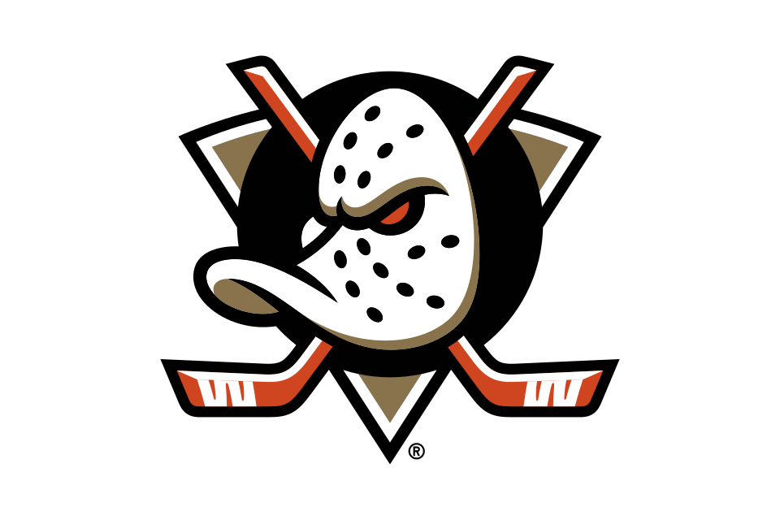

Week 12 NFL Survivor strategy and picks
David Fucillo provides NFL Survivor pool tips in Week 12, offering up safe, value, and trap picks.
Every league’s headlines, every team’s news.

 Kansas City Chiefs vs Buffalo Bills Thanksgiving Day
Kansas City Chiefs vs Buffalo Bills Thanksgiving Day

 Philadelphia Eagles vs. Dallas Cowboys Thanksgiving Day
Philadelphia Eagles vs. Dallas Cowboys Thanksgiving Day


 Sharks vs. Ducks
Sharks vs. Ducks
 Spurs at Trail Blazers
Spurs at Trail Blazers
 Kings at Warriors
Kings at Warriors


 Blackhawks vs. Kraken
Blackhawks vs. KrakenDavid Fucillo provides NFL Survivor pool tips in Week 12, offering up safe, value, and trap picks.

Target a Kirk Cousins revenge spot against Atlanta, catch points with Indianapolis and Miami, and bet on a Quinshon Judkins breakout

New Kalshi users can get a $55 bonus after making $25+ in trades on Black Friday games

Get a $25 bonus with the Polymarket promo code CBSSPORTS for Steelers-Broncos on Black Friday.

Use the latest MGM promo code CBSSPORTS to get $1,500 in bonus bets if your first bet loses for Black Friday NFL, college football betting

The Browns will be on Sunday Night Football this weekend, but it remains to be seen if rookie wide receiver Denzel Boston will be in their lineup.

The Denver Broncos are finally getting back to 100% on defense with their entire starting secondary all on the field at the same time in about a month. Hopefully the team will also welcome running back RJ Harvey back onto the field next week. With Sai’vion Jones likely out for an extended time joining Eyioma […]

Lost in the ongoing drama in Pittsburgh is that they play the 8-2 Broncos today.


The Pittsburgh Penguins will try to snap their five-game losing streak on Friday.


Desharnais to return for Capitals; Marchenko, Sissons back for Maple Leafs

1. TEAMS AROUND THEM THAT THE RANGERS HAVE TO WORRY ABOUT: Capitals, Sabres, Islanders, Maple Leafs and Flyers.

Atlético Madrid are prepared to sell Ademola Lookman in January, less than a year after signing him from Atalanta.According to Spanish outlet Fichajes, via CalcioMercato, the Nigerian forward is no l...

Hartlepool goalkeeper Max Merrick says it feels "amazing" to be back in action after seven weeks out with injury.

With the January transfer window just around the corner, multiple Real Madrid stars are facing an uncertain future ahead and could possibly even leave the club.One of them is Thiago Pitarch. Considere...

With the start of the round of 32, the FIFA U-17 World Cup enters its decisive stage, leaving the group stage behind. Following the tournament's expansion to 48 national teams, the top 32 teams now fa...

Ever since becoming an important player for St. Pauli, Eric Smith has enjoyed successful seasons.Under Fabian Hürzeler, he played a hybrid role, combining the positions of centre back and holding mid...

Virgil van Dijk Wants Liverpool Stay Amid Growing AC Milan InterestVirgil van Dijk’s contract situation at Liverpool is attracting attention from AC Milan, with the Italian giants keen on signing th...

Liverpool Transfer News: Lewis Hall Enquiries Made as Newcastle Set Huge Asking PriceLiverpool have made initial checks on Lewis Hall, with TeamTalk reporting that the Reds are now firmly in the mix f...

Leicester boss Russell Martin says he appreciates Khun Aiyawatt 'Top' Srivaddhanaprabha confirming City are no longer for sale.

Former UFC heavyweight champion, Andrei Arlovski, is 4-0 with four knockouts since parting ways with UFC back in June 2024. A fifth straight win could be enough to open the door for an Octagon return, which means Arlovski has more at stake than just the Misfits Boxing heavyweight title. But first, “The Pitbull” has to…

A third heavyweight fight has been added to UFC 336 in Toronto.

Tyron Woodley has high praise for Stephen Thompson
A battle between rising middleweights has been added to UFC Saudi Arabia.

Former UFC heavyweight champion Andrei Arlovski wishes he could have another crack at beating Tom Aspinall. ‘The Pitbull’ left MMA’s leading promotion after 42 fights inside the Octagon, the second most in UFC history.


Eugene Bareman expects UFC to understand his stance on Carlos Ulberg and Navajo Stirling not fighting.

Ian Machado Garry has been warned to expect tough assignments from the UFC moving forward. Four months after his unsuccessful welterweight title challenge against Islam Makhachev, Garry will return next Saturday at UFC Saudi Arabia.

The Dash righthander found his footing in June and July. The next step is making it stick

You’re guaranteed to know about one of these

Shohei Ohtani made his thoughts very clear on the idea of being a two-way star.

Paul Toboni loves taking chances on high upside arms with injury risk. A.J. Puk is another example of that philosophy

A couple of fun reads — from me!

Ewing was called up last season for a May 12 debut and immediately became a valued contributor.

Veteran reliever Joe Jimenez is reportedly joining the Rangers on a minor league deal

Bush is on the short list of players to win rings with three different franchises.

In one corner, there’s the 6-foot-8 Slovenian superstar Luka Doncic who recently surpassed Michael Jordan for the best start in modern NBA history. In the other, there’s the 7-foot-4 Victor...

The trio of Dončić, Kessler, and Austin Reaves have Lakers atop the NBA standings

"I told them after the season I wanted Walker."

How to watch the Spurs vs. Lakers game tonight — even without cable.

The Knicks rank just 13th in offensive rating, yet are riding a six-game win streak

We're going round by round, and it's not looking good for one side in this ongoing public spat

Top NBA betting apps include DraftKings, FanDuel, BetMGM, bet365, Caesars, Fanatics Sportsbook and Hard Rock Bet

Matisse Thybulle leads a group of 10 players to stream this weekend.